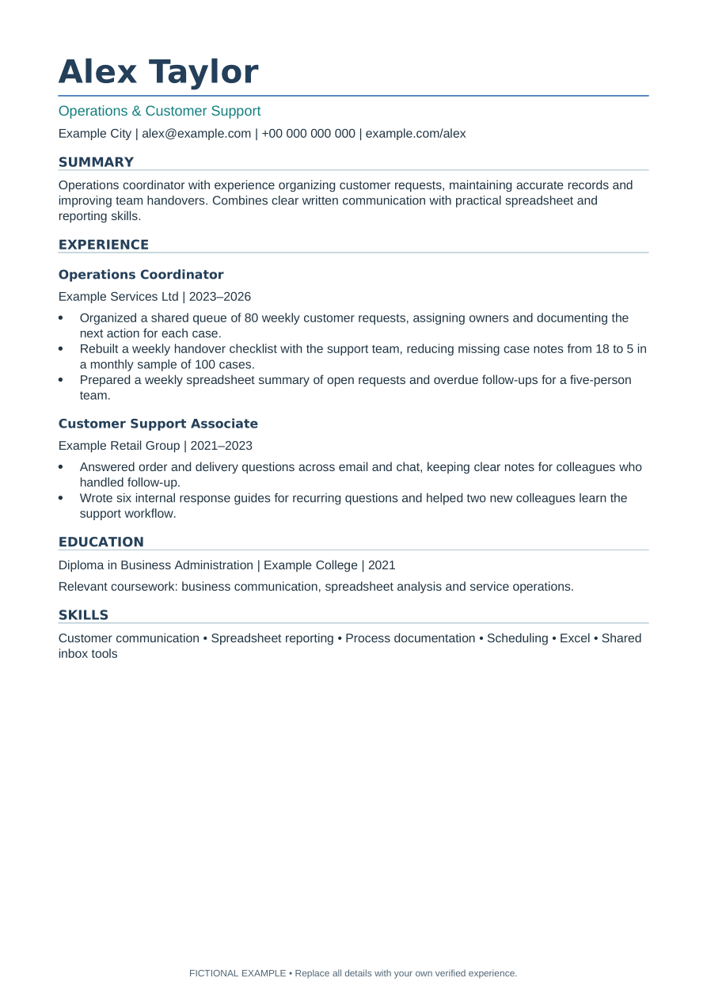

FREE EDITABLE SAMPLE
A clear structure.
Your own story.
Try the actual one-page resume template in your editor before buying the full pack. No account or email address required.
Download free sample · ZIPSee example PDFIncludes one A4 DOCX template, a fictional filled PDF example and short instructions. Replace every placeholder with your own truthful information.
Want the complete workspace?
- One-page and two-page resume versions
- A4 and US Letter sizes
- Matching cover letters and filled examples
- 500-row application tracker with next-action flags
- English guide and Russian quick start
One-time purchase. Applicable checkout taxes may be added.
Opened and rendered in LibreOffice on Linux. Microsoft Word, Excel and Google Docs/Sheets were not independently tested. Layout can change after editing or between editors. No guarantee of ATS acceptance, interviews or employment.

Actual document preview. All example details are fictional.